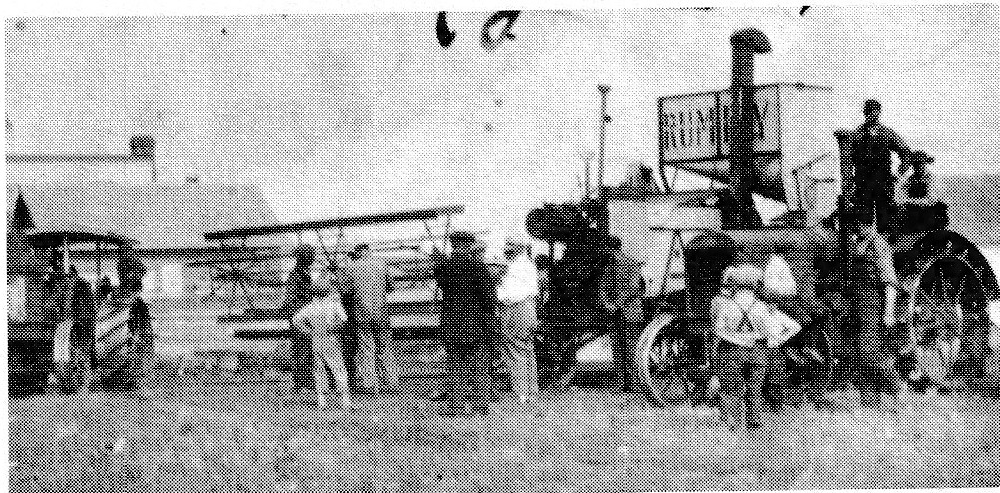

haul them home - back to back. We went about 100 yards and one wheel started to come off. Both of us were laughing. We couldn't lift the wheel back on as it hadn't fallen completely off. There was a box on top of the wheel and it was leaning on it. In the meantime Dad returned from his meeting and, seeing that we weren't home, he decided to check on us. So he and a neighbor came over and found us trying to cover up what had happened. He was not too amused when he saw the two racks back to back. We told him that was how we found them - and we thought they'd go that way. Dad said, "Don't you know better than that? You can't go backwards with these wheels - they fall off!''
Although Henri did reprimand the youngsters on occasion, for the most part he was easy going. At times when Alma needed his support to keep the children in line, his reply was often, "Tu un s'appeur les autres" (Ah, kill one and scare the rest).
All the same, Henri was a good father. He spent many Sundays playing with his family. Together they enjoyed ball and cricket while cards were the favorite indoor pastime. At an early age each youngster was taught cribbage and bridge.
Not much excited Henri. One day he was sitting in his chair reading the newspaper. As he was holding it in both hands in front of him, one of the youngsters crept up, struck a match and left quickly. Then the flame caught his eye; his newspaper was on fire! Rather quietly and with little fuss, he extinguished the fire.
Another time he lost a good team of horses from swamp fever. Henri took the news calmly. Alma remonstrated with him, "But it was your best team, Henri." He replied, "If I didn't have any horses, I couldn't lose them."
Often folks took advantage of Henri's nature. It is said that a good many owed him money. When he would go to collect, he would see the financial need of the family so the matter of the bill would be shelved. Very often Henri never saw the money.
In every large family there was always much to be done and the Alain family was no different. The children were expected to carry their share of the daily chores. The girls could not have found a finer teacher than their mother in the culinary skills. Her bread was very good and was turned out in quantities of fourteen to fifteen loaves at each baking. She was known for her delicious cream puffs, doughnuts and fudge. Alma was able to use that which the land offered, be it dandelion greens, rabbit, partridge, prairie chicken or their homegrown vegetables to make a tasty and filling meal. Visitors were frequent guests at her table; on Sundays it was not uncommon to have eighteen or nineteen gathered around. Everybody was always welcome, whether they were strangers passing through, temporary help or friends which the children brought home.
While the girls learned the skills needed in the home, the boys helped with the outside work of the farm. Henri always had at least twenty-five head of cattle, with the number reaching over a hundred one winter. That fall Henri had gone to Winnipeg with his father-in-law, Moise L'Heureux. Each had purchased two carloads of steers for their feed was plentiful and come spring, they sold the feeders. As well, Henri kept between twenty and twenty-five horses. There would be up to seven foals each spring.
So there were always plenty of chores for the boys and often, at a young age, they began to take on adult responsibilities. Louis was only ten years old when he began to ride the range each summer. At eleven Smokey began to drive the tractor. The first was a Mogul which was later replaced by a 1527 Case, followed by a larger Case tractor.

Henri readily accepted progress and the changes that followed. In partnership with his brother-in-law, Arthur L'Heureux, Henri bought the first threshing machine in Delmas. The engine was an International 1020 Mogul with a Goodison separator.
Harvest for Henri, his boys and other hired hands lasted from early fall till Christmas, for they threshed over a large area, travelling as far northwest as Paynton. Later Henri bought a fifteen-foot Rumley combine, the first pull-type in Delmas. With this labor-saving machine, the